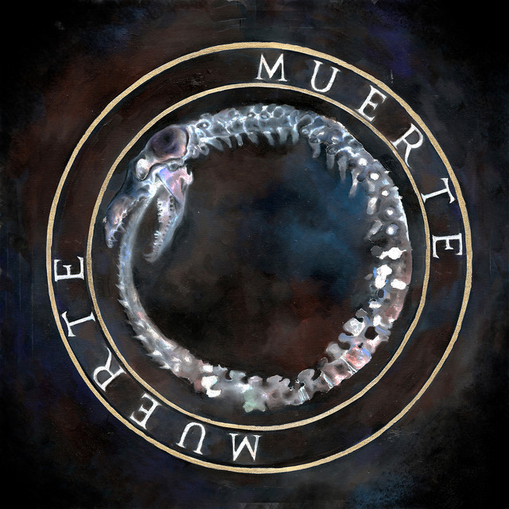

Muerte
Canserbero
Muerte es el segundo álbum de estudio del rapero venezolano Canserbero, considerado una obra maestra y pilar fundamental del rap en español. Con un sonido oscuro, hostil y reflexivo,sirviendo como contraste sombrío a su álbum hermano, Vida.
- 1. Es Epico
- 2. Ser Vero
- 3. En el valle de las sombras
$10.99
Add to Cart